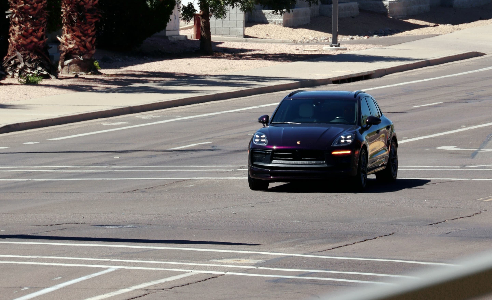
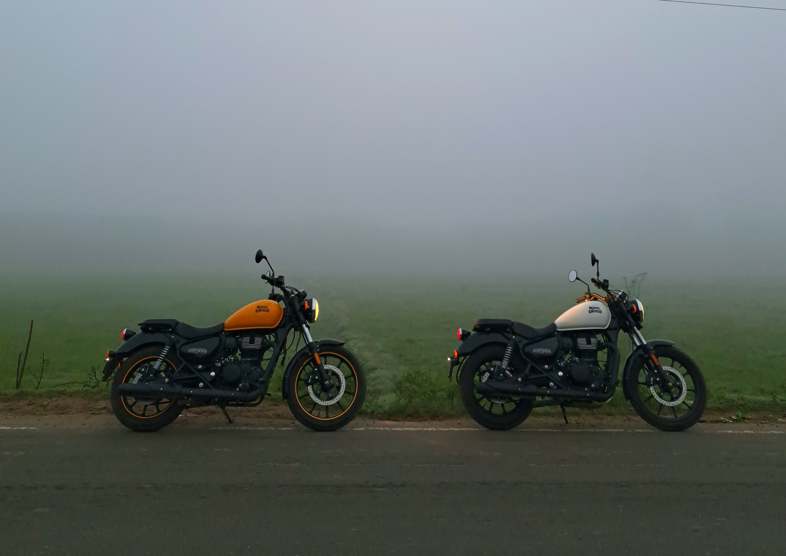
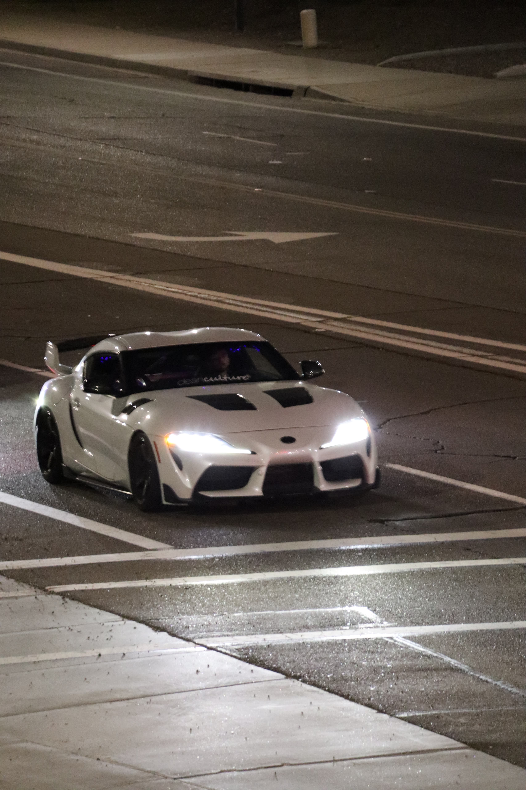
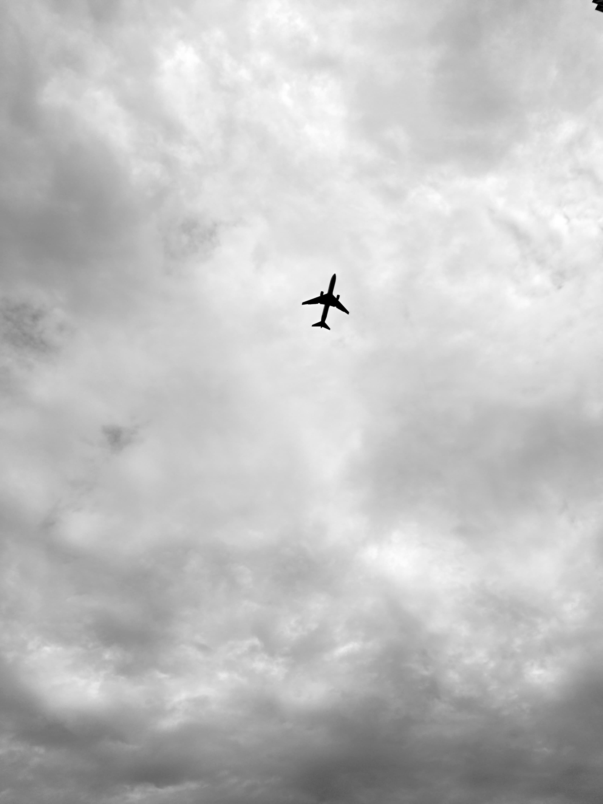
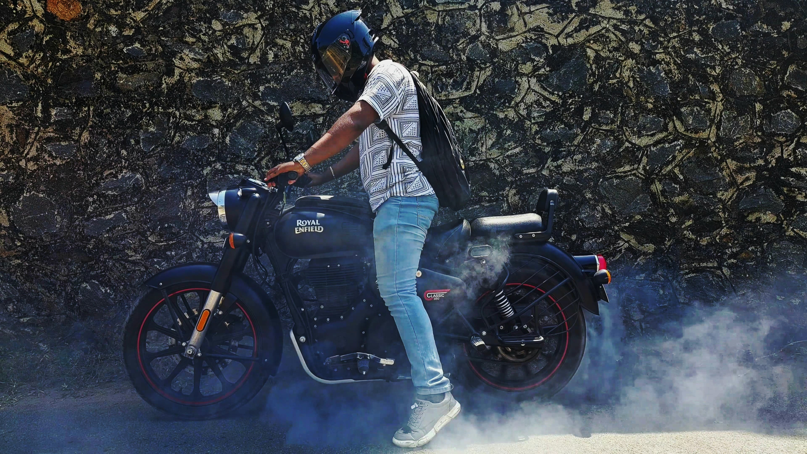
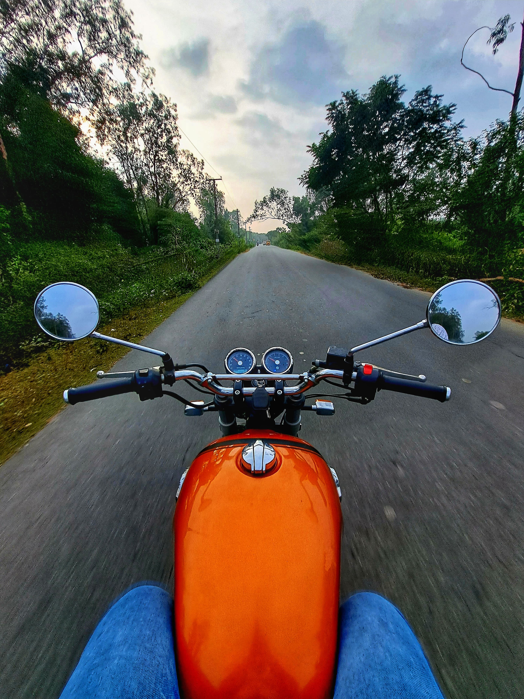
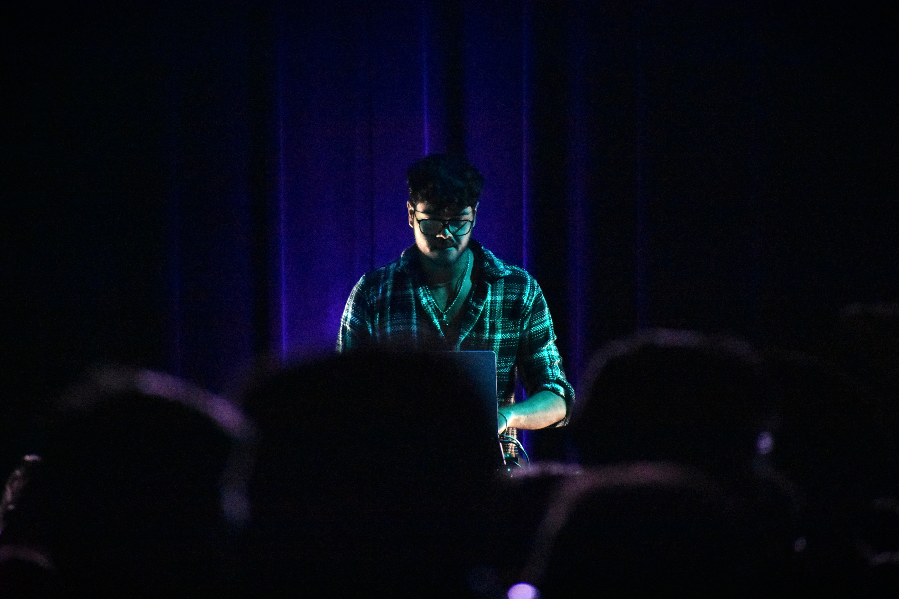
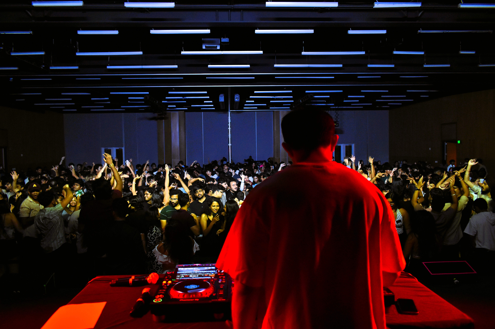

The Journey So Far
My engineering journey started with curiosity about how things work — taking apart toys as a kid, then rebuilding them. That curiosity led me to VIT Chennai, where I studied Mechanical Engineering and discovered product design, manufacturing, and hands-on prototyping. Four years of coursework in materials science, CFD, robotics, and mechatronics gave me a strong foundation and 5 design patents plus 3 internships across India and Singapore taught me that real engineering happens when theory meets the workshop floor.
In 2024, I moved to Arizona State University to pursue my Master's in Robotics & Autonomous Systems. At ASU, I've worked on wearable medical devices with Barrow Neurological Institute, built robotic maze solvers, designed IoT-enabled battery systems, and explored additive manufacturing for patient-specific implants. With a 4 GPA and a research position in the HAPT-X Lab, I'm on track to graduate in May 2026 with depth across mechanical, robotic, and medical device engineering.
Beyond Engineering
Engineering is how I solve problems, but it's not the only way I see the world. For the past year, I've served as the Officer of Photography for the Indian Students Association (ISA) at ASU, capturing the energy of cultural events, community gatherings, and campus life through my camera.
There's a surprising overlap between photography and engineering: both demand attention to detail, an understanding of constraints (light and shadow vs. load and stress), and the patience to iterate until you get it right. Whether I'm calibrating a camera for a robotic arm or composing a portrait at golden hour, the mindset is the same — observe, adjust, capture.
When I'm not behind a lens or in the lab, you'll find me exploring Arizona's landscapes, tinkering with IoT projects, or cooking South Indian food that reminds me of home.
Photography — Best Shots
Here are some of my favorite captures. Hover for a closer look — click to view full size.

isa-photo-1.jpg
isa-photo-2.jpg
isa-photo-3.jpg
isa-photo-4.jpg
isa-photo-5.jpg
isa-photo-6.jpg
isa-photo-6.jpg

isa-photo-6.jpgA Few Things About Me
Hometown: Chennai, India — filter coffee, Mylapore temples, and Marina Beach sunrises.
Current base: Tempe, AZ — desert sunsets and Sonoran cacti.
What drives me: Building things that go from idea to impact — especially in healthcare and robotics.
Favorite tools: SolidWorks for design, Python for everything else, and a good whiteboard for thinking.
When I'm not engineering: Photography, cooking, hiking and travelling.